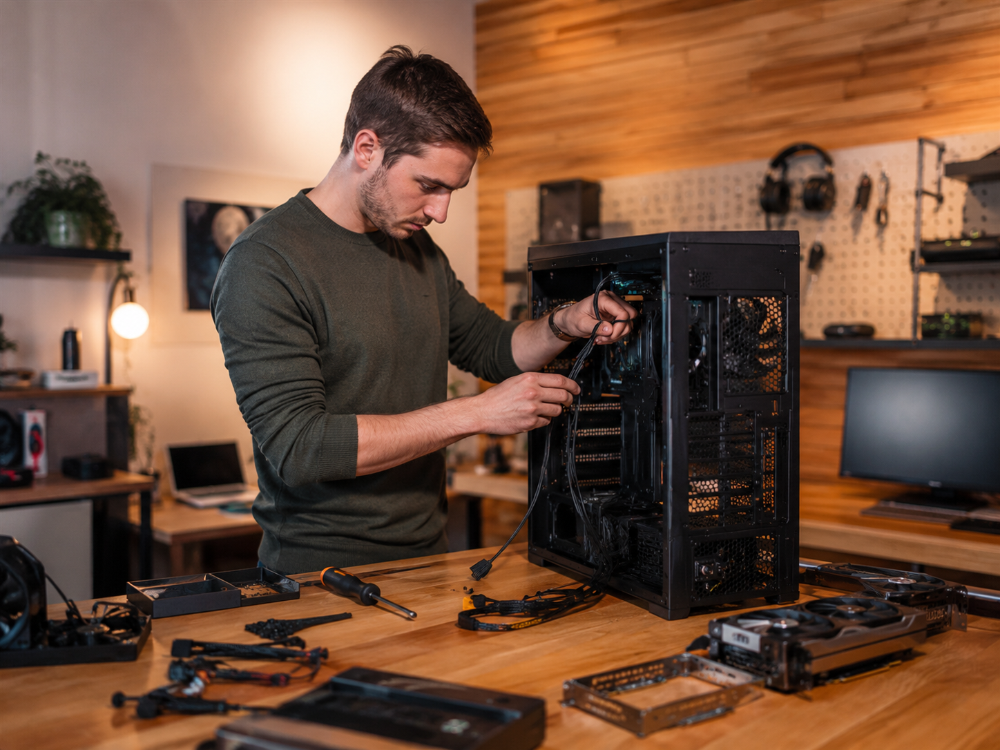

Web
Responsive design, layout structure, and content organization.
Project portfolio
These projects highlight hands-on learning in website design, home networking, systems thinking, and support-oriented communication. Each one reflects practical work rather than theory alone.

Web
Responsive design, layout structure, and content organization.
Network
Planning, topology, Wi-Fi setup, and troubleshooting logic.
Support
Research, explanations, and technical decisions that stay user-focused.
Featured work
Portfolio website
HTML, CSS, layout planning, branding, and content strategy.
This project transformed a crowded one-page site into a more professional multi-page website built for job applications, class presentation, and future service-based use.
Networking
Fiber network, switch topology, mesh placement, and device separation.
I planned a home setup that improved coverage while separating devices by purpose, making the network easier to manage and troubleshoot.
Systems
Windows, storage organization, and remote administration.
This project focused on centralizing storage, keeping files organized, and making the server easier to manage day to day through remote tools.
Research
Compatibility checking, budgeting, and explaining tradeoffs clearly.
I enjoy comparing parts and creating realistic recommendations that balance price, upgrade potential, and performance for the person actually using the machine.